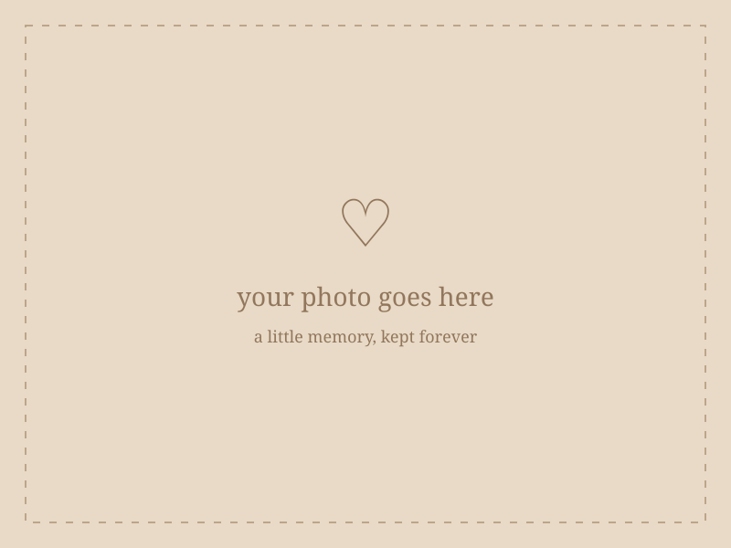

CHAPTER ONE · OUR LITTLE TIMELINE
Potongan waktu,
yang kusimpan.
Tidak semua kenangan harus berupa peristiwa besar. Kadang, justru hal-hal sederhana yang paling lama tinggal di hati.
✿ ───── ♡ ───── ✿

our little family
KENANGAN PERTAMA
Tempat semuanya bermula
Di antara begitu banyak tempat yang akan kutemui sepanjang hidup, rumah bersama kalian akan selalu menjadi tempat pertama yang kusebut pulang. Dari pelukan, tawa, dan hal-hal sederhana yang mungkin dulu tak kusadari, aku belajar bahwa kebahagiaan ternyata sesederhana memiliki kalian.
little me
DULU SEKALI
Saat aku masih kecil
Mungkin aku tidak mengingat semuanya, tetapi aku tumbuh di antara banyak hal baik yang kalian usahakan untukku.
another year
HARI YANG ISTIMEWA
Hal yang membuatku merasa dicintai
Mungkin yang tersisa dari hari-hari itu hanyalah foto, potongan cerita, dan ingatan yang perlahan memudar. Namun, perasaan disayangi itu akan selalu tinggal. Terima kasih karena telah menjadikan hari-hari kecilku penuh kehangatan, bahkan melalui hal-hal sederhana yang sekarang justru paling kurindukan..
wherever we go
KE MANA PUN
Selama bersama kalian
Kelak, mungkin kita tidak akan selalu berada di tempat yang sama atau punya waktu sebanyak sekarang untuk berkumpul. Namun, aku ingin kalian tahu bahwa setiap tawa di foto ini, setiap percakapan sederhana, dan setiap waktu yang kita habiskan bersama akan selalu punya tempat istimewa di hatiku. Ke mana pun aku pergi, ada bagian dari diriku yang akan selalu tinggal bersama kalian.